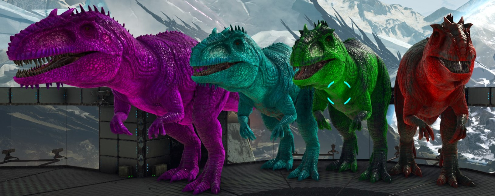
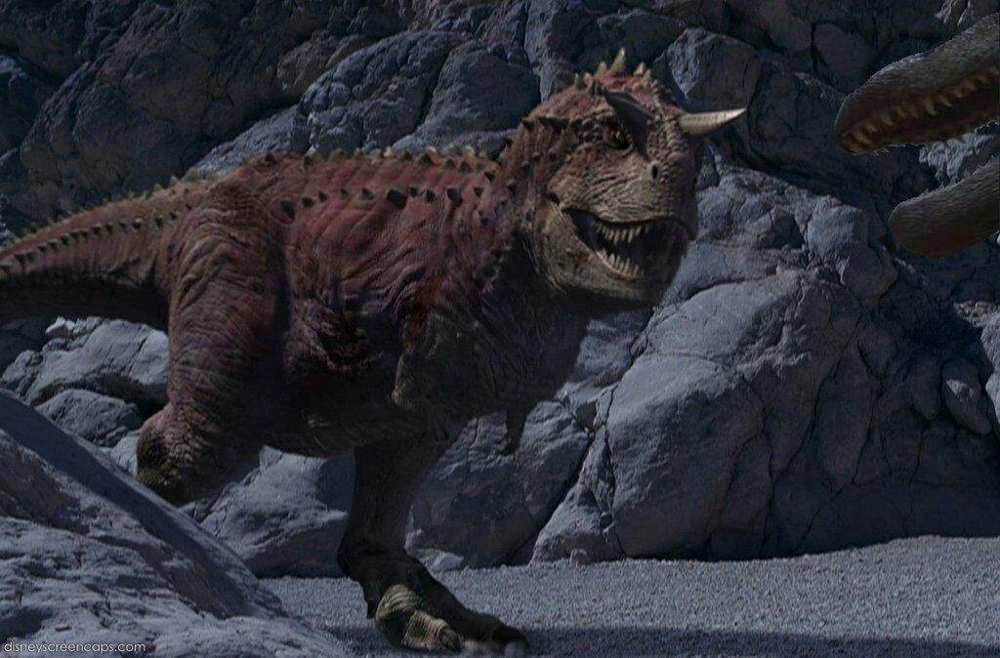
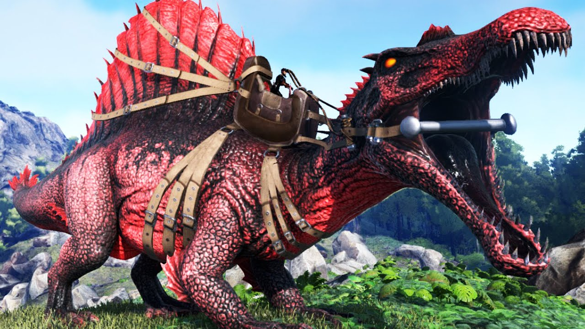
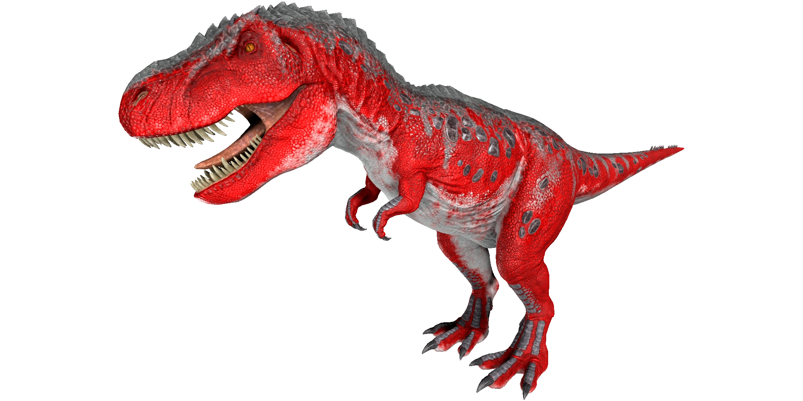

Gigantosaurio
Es uno de los mayores terópodos conocidos; se cree que alcanzaba longitudes de entre 12 y 13 metros, con un cráneo de posiblemente 1,56 metros de largo y un peso aproximado de entre 6 y 8 toneladas. Este género ha interesado mucho a la comunidad científica y popular debido, entre otras razones, a su gran tamaño, convirtiéndose en parte de un intenso debate científico acerca los tamaños máximos que pueden alcanzar los dinosaurios terópodos. Debió ser el depredador tope de su época, ubicándose en la cima de la cadena alimenticia. Es probable que haya depredado una amplia gama de animales saurópsidos, incluyendo hasta gigantescos saurópodos titanosaurianos. Tenía como herramienta de rastreo su agudo olfato y como principal arma de ataque sus grandes fauces dotadas de largos y achatados dientes con bordes dentados, especializados para cortar y desgarrar profundamente la carne de sus víctimas.
Al ser uno de los Dinosaurios mas poderosos y grandes su costo varia entre los $20,000 a los 30,000 tenemos de varios colores, este Dino en especial al ser tan peligroso su entrega se extiende hasta un mes ya que se tienen que tramitar los seguros para que salga legalmente.
Carnotauro
Carnotaurus era un terópodo de tamaño medio a grande, pero de constitución ligera de entre 8 y 9 metros de longitud, alrededor de 3,5 de altura, y pesaba según los estudios entre 1350 y 2100 kilogramos. Se estima que su masa fue de 1350 kilogramos, 1500 kilogramos, 2000 kilogramos, 2,100 kilogramos, y entre 1306 a 1743 kg kilogramos en estudios separados que utilizaron diferentes métodos de estimación. Esto lo vuelve uno de los abelisáuridos más grandes conocidos, solo Pycnonemosaurus y posiblemente Abelisaurus pudieron ser de mayor tamaño, aunque los restos incompletos de estos géneros hacen que las estimaciones sean imprecisas. Su cabeza era muy pequeña en comparación con la de los otros predadores de su tamaño, alrededor de 60 centímetros de largo. Las características más distintivas del Carnotaurus son dos cuernos gruesos sobre los ojos y unos miembros delanteros extremadamente reducidos y atrofiados, provistos de cuatro dedos. En estudios separados, que utilizan diferentes métodos de estimación, muestran a Carnotaurus un altamente especializado terópodo, lo que se denota en características del cráneo, las vértebras y las extremidades anteriores. La pelvis y extremidades posteriores, por otra parte, mantuvieron relativamente una estructura conservadora, parecidas a las del más basal Ceratosaurus. Tanto la pelvis como los huesos de los miembros posteriores eran largos y delgados. El hueso del muslo izquierdo mide 103 cm de longitud, pero muestra un diámetro promedio de solo 11 centímetros
Al ser uno de los Dinosaurios carnivoros chicos pero fuertes su precio varia entre $15,000 a los $17,000
Spinosaurio
El Spinosaurus aegyptiacus vive en un lugar húmedo abundante en vegetación y fuentes de agua dulce en el cual gigantescos herbívoros saurópodos como Paralititan y Rebbachisaurus u ornitópodos como el majestuoso Ouranosaurus pastaban y bebían, también peces enormes como Onchopristis, Cretolamna y Mawsonia nadaban en las aguas del Cretácico africano. Terópodos depredadores con los que este animal convivió fueron Carcharodontosaurus, Deltadromeus o Rugops y además convivió con otros arcosaurios de la época. Cocodrilos como el gigantesco Sarcosuchus o los exóticos Kaprosuchus y Stomatosuchus nadaban por sus dominios y pterosaurios como Alanqa surcaban el cielo sobre él.
Al ser uno de los Dinosaurios fuertes y sobre todo que son acuaticos y a la vez terrestres tiene un precio de $20,000 a 25,000
T-Rex
Como otros tiranosáuridos, T. rex fue un carnívoro bípedo con un enorme cráneo equilibrado por una cola larga y pesada. En relación con sus largos y poderosos miembros traseros, los miembros superiores de Tyrannosaurus eran pequeños, pero sorprendentemente fuertes para su tamaño, y terminaban en dos dedos con garras. Aunque otros terópodos rivalizan o superan a Tyrannosaurus rex en tamaño, todavía es el mayor tiranosáurido conocido y uno de los mayores depredadores conocidos de la Tierra, midiendo entre 12 a 13 metros de largo, 4 metros de altura hasta las caderas, y con pesos estimados entre 6 a 9 toneladas. Durante mucho tiempo fue el mayor carnívoro de su ecosistema; debió de haber sido el superpredador, cazando hadrosáuridos y ceratópsidos, aunque algunos expertos han sugerido que era principalmente carroñero. El debate de si Tyrannosaurus fue un depredador dominante o un carroñero es uno de los más largos en la paleontología.
Al ser uno de los Dinosaurios fuertes y sobre todo que son acuaticos y a la vez terrestres tiene un precio de $20,000 a 25,000
Argentavis

La especie es una de las mayores aves voladoras de la que se tiene conocimiento y se cree que pudo llegar a tener una envergadura de hasta ocho metros. Habitó, durante el Mioceno superior, la llanura chacopampeana y las planicies de la Patagonia. Probablemente las Teratornithidae como el Argentavis están relacionados directamente con los ancestros de los actuales buitres americanos.
Al ser uno de los Dinosaurios de vuelo su precio es de $20,000